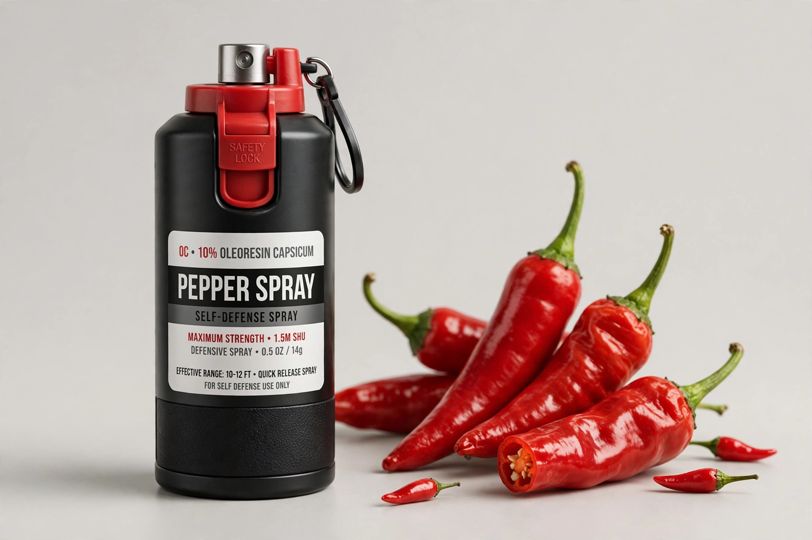

Pepper spray, also known as OC spray (oleoresin capsicum), is a lachrymator agent used in policing, riot control and self-defence. It inflames the eyes, causing tearing, pain and temporary blindness, and irritates the respiratory system.

The active ingredient is capsaicin extracted from chili peppers, suspended in a carrier and propelled as spray, stream, fog or foam. Strength is measured in Scoville heat units of the formulation. Exposure causes involuntary eye closure, difficulty breathing and disorientation, typically resolving within an hour, though it can be dangerous for people with asthma.
Developed in the 1960s–70s and popularized for US law enforcement and postal workers against dogs, pepper spray is now widespread; legality for civilian carry varies by country — restricted or prohibited in Canada and much of Europe, broadly legal in most US states. Stronger bear spray formulations are used in North America.